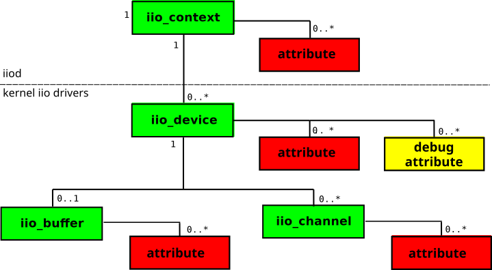

Usage Model
The basic bricks of the libiio API are the iio_context, iio_device, iio_channel and iio_buffer classes.

A iio_context object may contain zero or more iio_device objects. A iio_device object is associated with only one iio_context. This object represents an instance of the library.
A iio_device object may contain zero or more iio_channel objects. A iio_channel object is associated with only one iio_device.
A iio_device object may be associated with one iio_buffer object, and a iio_buffer object is associated with only one iio_device.
Note
A C++ API is provided in the form of a wrapper around the C API. The C++ API is not a one-to-one mapping of the C API, but rather a object oriented approach to the C API with the use of classes and methods.
Scanning for IIO contexts
The first step when dealing with a collection of IIO devices (known as a context) is to find the context. This can be connected via usb, network, serial or local. Having these different connectivity options could prove to be problematic, but libiio abstracts the low level communications away, and allows you just to find contexts, and talk to devices without being interested in the low level aspects. Many find this convenient to develop applications and algorithms on a host, and quickly move to an embedded Linux system without having to change any code.
To find what IIO contexts are available, use the following:
iio_create_scan_context(): Create a iio_scan_context object. Depending on what backends were enabled with compiling the library, some of them may not be available. The first argument to this function is a string which is used as a filter (“usb:”, “ip:”, “local:”, “usb:ip”, where the default (NULL) means any backend that is compiled in).
iio_scan_context_get_info_list(): get the iio_context_info object from the iio_scan_context object. The iio_context_info object can be examined with the iio_context_info_get_description() and iio_context_info_get_uri() to determine which uri you want to attach to.
Creating a context
Different functions are available to create the iio_context object. Depending on what backends were enabled when compiling the library, some of them may not be available. Each function will result in a different backend being used.
Those functions are:
iio_create_context_from_uri(): This should be the main function to create contexts, which takes a Uniform Resource Identifier (uri), and returns a iio_context.
iio_create_default_context(): Create a “local” context if we can, otherwise use the ENV_VAR IIOD_REMOTE.
iio_create_local_context(): Create a “local” context, to use the IIO devices connected to the system (typically for cross-compiled applications).
iio_create_network_context(): Create a “network” context that will work with a remotely connected target.
Note that every function that compose the API of libiio will work independently of the function that was used to create the iio_context object.
The iio_context object can later be destroyed with iio_context_destroy().
Parameters
Different kinds of parameters are available: parameters that apply to a iio_device, and parameters that apply to one or more iio_channel.
The number of device-specific parameters can be obtained with iio_device_get_attrs_count(). Each attribute name can be obtained with iio_device_get_attr().
The number of channel-specific attributes can be obtained with iio_channel_get_attrs_count(). Each attribute name can be obtained with iio_channel_get_attr().
Alternatively, it is possible to lookup for the name of an attribute with iio_device_find_attr() and iio_channel_find_attr().
Reading and modifying parameters
Reading a parameter
Read device-specific attributes with those functions:
iio_device_attr_read()
iio_device_attr_read_all()
iio_device_attr_read_bool()
iio_device_attr_read_longlong()
iio_device_attr_read_double()
Read channel-specific attributes with those functions:
iio_channel_attr_read()
iio_channel_attr_read_all()
iio_channel_attr_read_bool()
iio_channel_attr_read_longlong()
iio_channel_attr_read_double()
Read debug attributes with those functions:
iio_device_debug_attr_read()
iio_device_debug_attr_read_all()
iio_device_debug_attr_read_bool()
iio_device_debug_attr_read_longlong()
iio_device_debug_attr_read_double()
Modifying a parameter
Write device-specific attributes with those functions:
iio_device_attr_write()
iio_device_attr_write_all()
iio_device_attr_write_bool()
iio_device_attr_write_longlong()
iio_device_attr_write_double()
Write channel-specific attributes with those functions:
iio_channel_attr_write()
iio_channel_attr_write_all()
iio_channel_attr_write_bool()
iio_channel_attr_write_longlong()
iio_channel_attr_write_double()
Write debug attributes with those functions:
iio_device_debug_attr_write()
iio_device_debug_attr_write_all()
iio_device_debug_attr_write_bool()
iio_device_debug_attr_write_longlong()
iio_device_debug_attr_write_double()
Triggers
Some devices, mostly low-speed ADCs and DACs, require a trigger to be set for the capture or upload process to work.
In libiio, triggers are just regular iio_device objects. To check if an iio_device can be used as a trigger, you can use iio_device_is_trigger().
To see if one device is associated with a trigger, use iio_device_get_trigger().
To assign one trigger to a iio_device, you can use iio_device_set_trigger(). If you want to disassociate a iio_device from its trigger, pass NULL to the “trigger” parameter of this function.
Capturing or uploading samples
The process of capturing samples from the hardware and uploading samples to the hardware is done using the functions that apply to the iio_buffer object.
Enabling channels and creating the Buffer object
The very first step is to enable the capture channels that we want to use, and disable those that we don’t need. This is done with the functions iio_channel_enable() and iio_channel_disable(). Note that the channels will really be enabled or disabled when the iio_buffer object is created.
Also, not all channels can be enabled. To know whether or not one channel can be enabled, use iio_channel_is_scan_element().
Once the channels have been enabled, and triggers assigned (for triggered buffers) the iio_buffer object can be created from the iio_device object that will be used, with the function iio_device_create_buffer(). This call will fail if no channels have been enabled, or for triggered buffers, if the trigger has not been assigned.
When the object is no more needed, it can be destroyed with iio_buffer_destroy().
Refilling the Buffer (input devices only)
If the Buffer object has been created from a device with input channels, then it must be updated first. This is done with the iio_buffer_refill() function.
Reading or writing samples to the Buffer
libiio offers various ways to interact with the iio_buffer object.
Direct copy
If you already have a buffer of samples, correctly interleaved and in the format that the hardware expects,
it is possible to copy the samples directly into the iio_buffer object using memcpy:
size_t iio_buf_size = iio_buffer_end(buffer) - iio_buffer_start(buffer);
size_t count = MAX(sizeof(samples_buffer), iio_buf_size);
memcpy(iio_buffer_start(buffer), samples_buffer, count);
Using memcpy to copy samples from the iio_buffer is not recommended.
When capturing samples from an input device, you cannot assume that the iio_buffer object contains only the samples you’re interested in.
Iterating over the buffer with a callback
libiio provides a way to iterate over the buffer by registering a callback function, with the iio_buffer_foreach_sample() function.
The callback function will be called for each “sample slot” of the buffer, which will contain a valid sample if the buffer has been refilled, or correspond to an area where a sample should be stored if using an output device.
ssize_t sample_cb(const struct iio_channel *chn, void *src, size_t bytes, void *d)
{
/* Use "src" to read or write a sample for this channel */
}
int main(void)
{
...
iio_buffer_foreach_sample(buffer, sample_cb, NULL);
...
}
Note that the callback will be called in the order that the samples appear in the buffer, and only for samples that correspond to channels that were enabled.
Iterating on the samples with a for loop
This method allows you to iterate over the samples slots that correspond to one channel. As such, it is interesting if you want to process the data channel by channel.
It basically consists in a for loop that uses the functions iio_buffer_first(), iio_buffer_step() and iio_buffer_end():
for (void *ptr = iio_buffer_first(buffer, channel);
ptr < iio_buffer_end(buffer);
ptr += iio_buffer_step(buffer)) {
/* Use "ptr" to read or write a sample for this channel */
}
Extracting from/to a second buffer
Finally, it is possible to use the iio_channel_read() and iio_channel_read_raw() functions to read samples from the iio_buffer to a second byte array. The samples will be deinterleaved if needed. The “raw” variant will only deinterleave the samples, while the other variant will deinterleave and convert the samples.
For output devices, the iio_channel_write() and iio_channel_write_raw() functions are also available. The “raw” variant will only interleave the samples (if needed), while the other variant will interleave and convert the samples back to their hardware format.
Convert the samples from/to hardware format
The raw stream of samples generally isn’t in a format that can be directly used in algorithms. Some operations, like endianness conversion and bit-shifting of the samples, have to be performed first.
libiio offers two functions that can be used to convert samples:
iio_channel_convert(), to convert from the hardware format
iio_channel_convert_inverse(), to convert to the hardware format.
Those two functions should always be used when manipulating the samples of the iio_buffer. The exception is when iio_channel_read() or iio_channel_write() are used, as the conversion is then done internally.
Submitting the Buffer (output devices only)
When all the samples have been written to the iio_buffer object, you can submit the buffer to the hardware with a call to iio_buffer_push(). As soon as the buffer has been submitted, it can be reused to store new samples.
If the iio_buffer object has been created with the “cyclic” parameter set, and the kernel driver supports cyclic buffers, the submitted buffer will be repeated until the iio_buffer is destroyed, and no subsequent call to iio_buffer_push() will be allowed.
Advanced options
Register and retrieve a pointer
The iio_device and iio_channel allow you to register a pointer, that can then be retrieved at a later moment.
A pointer can be registered with a iio_device object using iio_device_set_data(), and can be retrieved with iio_device_get_data().
A pointer can be registered with a iio_channel object using iio_channel_set_data(), and can be retrieved with iio_channel_get_data().
Debug attributes
Some IIO devices provide debug parameters, but their presence is optional. In a similar way than with regular device parameters, the number of debug parameters can be obtained with iio_device_get_debug_attrs_count(). Each individual parameter can be retrieved with iio_device_get_debug_attr(). Alternatively, it is possible to lookup for the name of a debug attribute with iio_device_find_debug_attr().
Those debug parameters can be read using the following functions:
iio_device_debug_attr_read(),
iio_device_debug_attr_read_all(),
iio_device_debug_attr_read_bool(),
iio_device_debug_attr_read_longlong(),
iio_device_debug_attr_read_double().
Those debug parameters can be written using the following functions:
iio_device_debug_attr_write(),
iio_device_debug_attr_write_all(),
iio_device_debug_attr_write_bool(),
iio_device_debug_attr_write_longlong(),
iio_device_debug_attr_write_double().
Reading and writing registers
As for debug attributes, some IIO devices also offer the possibility to read and write hardware registers directly. In libiio, this can be done with two functions, iio_device_reg_read() and iio_device_reg_write().
Application Binary Interface
The libiio ABI tries to be both backwards and forwards compatible. This means applications compiled against an older version will work fine with a newer dynamically linked library. Applications compiled against a newer version will work fine with an older dynamically linked library so long as they don’t access any new features. Applications using new features should ensure the libiio version is compatible by using iio_library_get_version() to avoid undefined behavior.
\example iio_attr.c Part of the libiio-utilites, iio_attr is a utility for displaying information about local or remote IIO devices. By providing an optional value, iio_attr will attempt to write the new value to the attribute. \example iio_info.c Part of the libiio-utilites, iio_info is a utility for displaying information about local or remote IIO devices. \example iio_readdev.c Part of the libiio-utilites, iio_readdev is a utility for reading buffers from connected IIO devices, and sending results to standard out. \example iio_writedev.c Part of the libiio-utilites, iio_writedev is a utility for writing buffers from connected IIO devices. \example iio_reg.c Part of the libiio-utilites, iio_reg is a utility for debugging local IIO devices. It should not be used by normal users, and is normally used by driver developers during development, or by end users debugging a driver, or sending in a feature request. It provides a mechanism to read or write SPI or I2C registers for IIO devices. \example ad9361-iiostream.c This example libiio program is meant to exercise the features of IIO functionality on the AD9361 found on the AD-FMCOMMS2-EBZ, AD-FMCOMMS3-EBZ, and the ADRV9361-Z7035 RF SOM. \example ad9371-iiostream.c This example libiio program is meant to exercise the features of IIO functionality on the AD9371. \example adrv9009-iiostream.c This example libiio program is meant to exercise the features of IIO functionality on the ADRV9009. \example dummy-iiostream.c This example libiio program is meant to exercise the features of IIO present in the sample dummy IIO device in the Linux kernel. \example iio-monitor.c A Curses based application which implements real time monitoring of IIO non-buffer samples. @if CPP_BINDINGS \example iiopp-enum.cpp This example demonstrates usage of the C++ API to enumerate devices, channels and attributes. @endif */